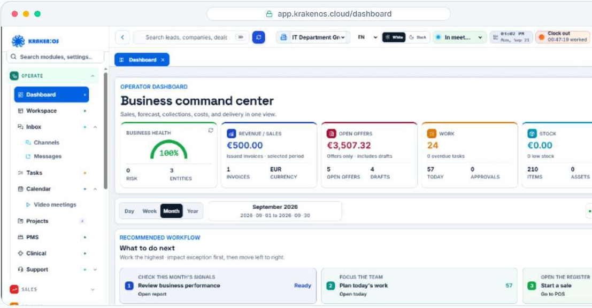
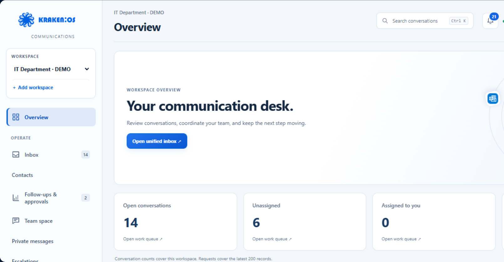
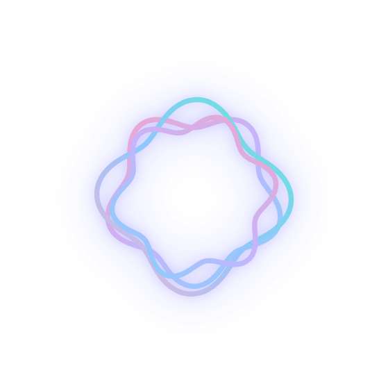

01 / ITD LABS

KRAKEN:OSPlatformë modulare
Kraken OS
Klientët, puna dhe vendimet lidhen në një platformë të përbashkët.
CRMProjekteAccountingWorkspace
Shiko produktinITD LABS
Produkte dhe eksperimente të zhvilluara brenda IT Department. Secili me një qëllim të qartë dhe identitetin e vet.

KRAKEN:OSPlatformë modulare
Klientët, puna dhe vendimet lidhen në një platformë të përbashkët.

COMMUNICATIONSKomunikim me klientët
Kanalet, kontaktet, bisedat e ekipit dhe ofertat në një platformë.

SAY IT. CONSIDER IT HANDLED.Asistent privat me zë
Një asistent i menduar për mënyrën si punon: nga kërkesat te detyrat dhe takimet.
Pamje e produktit · pa link
Pamje nga prezantimi i produktit. Modulet dhe kanalet e disponueshme varen nga konfigurimi, lejet dhe integrimet e miratuara.
A U R A
Një asistent i menduar për mënyrën si punon: nga kërkesat te detyrat dhe takimet.
Pamje paraprake e produktit
Say it. Consider it handled.